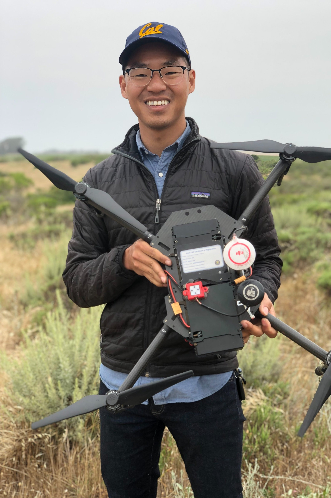

Geographer
Most of my titles have contained Geographic Information Systems (GIS) analyst. Initially I used GIS platforms like ArcGIS and QGIS to plan cities and renewable energy projects.
Currently I build data processing pipelines to acquire and analyze satellite imagery at scale, with a focus on food systems. Additionally I've supported uncrewed aerial systems (UAS) development at several startups and served as a pilot in academia.